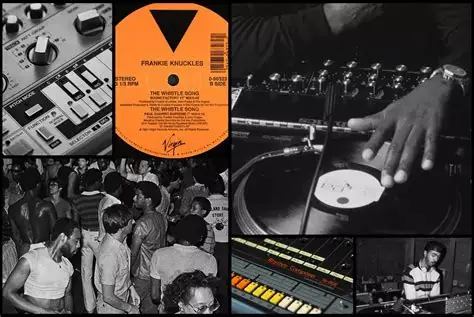
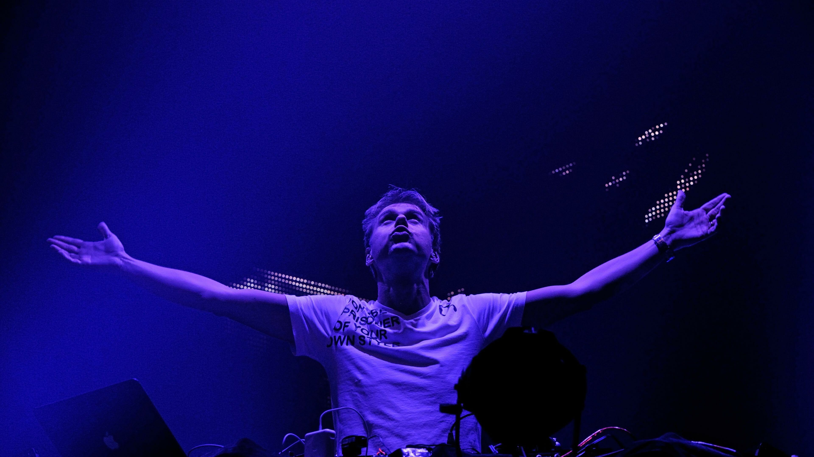

House

El House es un género de música electrónica que se caracteriza por su ritmo constante y repetitivo, con un tempo generalmente entre 120 y 130 BPM. Surgió en Chicago en la década de 1980 y ha evolucionado a lo largo de los años, dando lugar a numerosos subgéneros como Deep House, Tech House y Progressive House.
El House se distingue por su uso de sintetizadores, cajas de ritmos y samples, creando un sonido envolvente y bailable. Es un género que ha influido en la música popular y sigue siendo una fuerza dominante en la escena de clubes y festivales de todo el mundo.
Techno

El Techno es un género de música electrónica que se caracteriza por su enfoque en la producción y la experimentación sonora, con un tempo generalmente entre 120 y 150 BPM. Surgió en Detroit en la década de 1980 y ha evolucionado a lo largo de los años, dando lugar a numerosos subgéneros como Minimal Techno, Acid Techno y Industrial Techno.
El Techno se distingue por su uso de sintetizadores, cajas de ritmos y samples, creando un sonido envolvente y bailable. Es un género que ha influido en la música popular y sigue siendo una fuerza dominante en la escena de clubes y festivales de todo el mundo.
Trance

El Trance es un género de música electrónica que se caracteriza por su estructura melódica, con builds y drops que crean tensión y liberación. Surgió en Alemania en la década de 1990 y ha evolucionado a lo largo de los años, dando lugar a numerosos subgéneros como Progressive Trance, Psytrance y Dark Trance.
El Trance se distingue por su uso de sintetizadores, cajas de ritmos y samples, creando un sonido envolvente y bailable. Es un género que ha influido en la música popular y sigue siendo una fuerza dominante en la escena de clubes y festivales de todo el mundo.
Dubstep

El Dubstep es un género de música electrónica que se caracteriza por su uso del "wobble" bass, con un tempo generalmente entre 140 y 150 BPM. Surgió en Londres en la década de 2000 y ha evolucionado a lo largo de los años, dando lugar a numerosos subgéneros como Future Bass, Brostep y Chillstep.
El Dubstep se distingue por su uso de sintetizadores, cajas de ritmos y samples, creando un sonido envolvente y bailable. Es un género que ha influido en la música popular y sigue siendo una fuerza dominante en la escena de clubes y festivales de todo el mundo.
Microgéneros

En la era digital, han surgido numerosos microgéneros que reflejan las innovaciones tecnológicas y las nuevas formas de expresión musical. Estos géneros suelen ser más experimentales e innovadores, incorporando elementos del pop, el rock, el jazz e incluso del clásico.
Los microgéneros también reflejan las tendencias culturales contemporáneas, como el uso intensivo del software musical, los efectos sonoros avanzados, las técnicas de producción digital, e incluso el impacto social mediado por las redes sociales.
Artistas destacados
Algunos de los artistas más influyentes en la música electrónica incluyen:

Daft Punk.

Deadmau5.

Calvin Harris.
Tiësto.

Armin van Buuren.
Skrillex.
y muchos más. Cada uno de ellos ha contribuido a la evolución del género con su estilo único y su
innovación musical.
Estos artistas han llevado la música electrónica a un público global, participando en festivales internacionales y colaborando con otros músicos de diversos géneros.